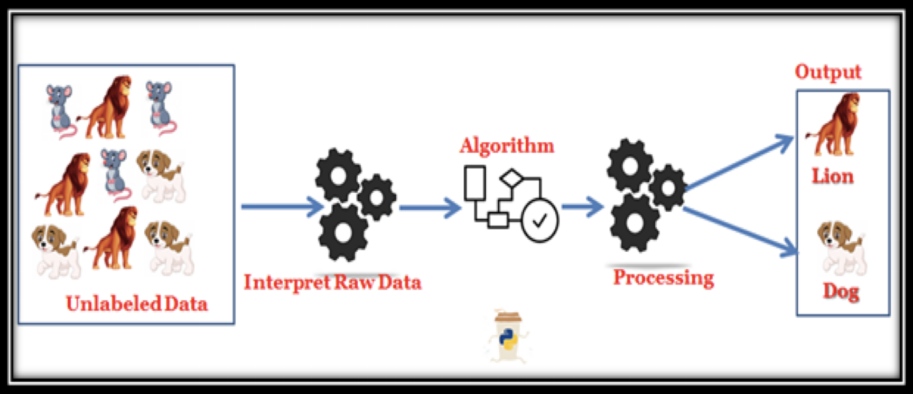
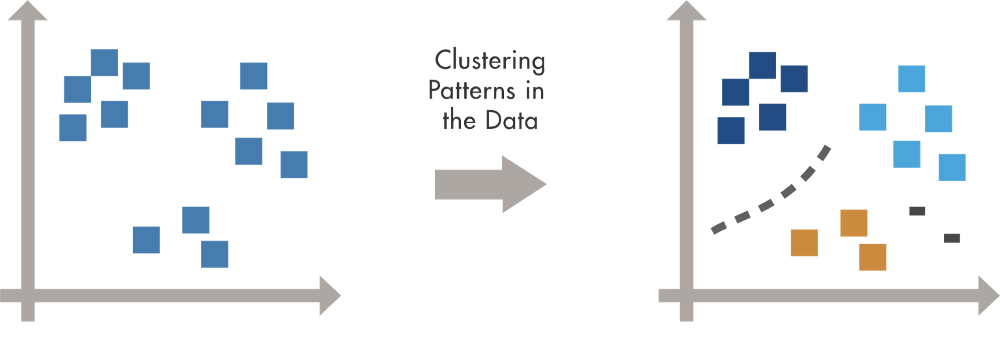

Lesson 7 - Unsupervised Learning
At the end of this lesson, you will be able to:
- Explain what is Unsupervised Learning and how it works.
- Describe the different types of Unsupervised Learning.
- Summarize Unsupervised Learning Algorithm.
- List the applications and challenges of Unsupervised Learning.
What is Unsupervised Learning?
- The computer is provided with unlabelled data and extracts previously unknown patterns or insights from it.
- There are many different ways that machine learning algorithms do this:
- Clustering
- Density Estimation
- Anomaly Detection
- Principal Component Analysis(PCA)
- While Supervised learning requires input-output pairs (or labelled data) to learn, Unsupervised learning algorithms use input data only (unlabeled data).
- The goal is to gain knowledge and find structure in the data.

What are different types of Unsupervised Learning?
Two major types of Unsupervised Learning:
Transformations of the dataset
Algorithms that create a new representation of the data which might be easier for human or other machine learning algorithms to understand compared to the original representation of the data.
Common application is Dimensionality reduction.
E.g., Representing table in 2 D graph for visualization.
Clustering
- Partitioning data into distinct groups of similar items.
- Clustering is the most common unsupervised learning technique.
- It is used for exploratory data analysis to find hidden patterns or groupings in data.
- Applications for cluster analysis include gene sequence analysis, market research, and object recognition.

Unsupervised Learning Applications
Some common applications include:
News Sections
- Google News uses unsupervised learning to categorize articles on the same story from various online news outlets.
Computer vision
- Unsupervised learning algorithms can find structure in image data without labels - for example, grouping similar images together or segmenting an image into regions.
Anomaly detection
- Unsupervised learning models can comb through large amounts of data and discover atypical data points within a dataset.
- These anomalies can raise awareness around faulty equipment, human error, or breaches in security.
Medical imaging
- Unsupervised machine learning can help with medical imaging by finding structure in scans - for example, segmenting regions or flagging unusual areas - supporting specialists in radiology and pathology.
Customer personas
- Unsupervised learning allows businesses to build better buyer persona profiles, enabling organizations to align their product messaging more appropriately.
Recommendation Engines
- Using past purchase behavior data, unsupervised learning can help to discover data trends that can be used to develop more effective cross-selling strategies.
Challenges in Unsupervised Learning
- There is no way of obtaining the method of data sorting, as the dataset is unlabeled.
- They may be less accurate as the input data is not known and labelled by the humans making the machine do it.
- The information obtained by the algorithm may not always correspond to the required output class.
- The user must understand and map the output obtained with the corresponding labels.